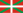
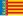
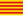
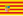
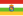

Ranked lists of Spanish autonomous communities
This article includes several ranked indicators for Spain's 17 autonomous communities, as well as for the autonomous cities of Ceuta and Melilla.
Population and geography
[edit]| Autonomous community/city |
Population (2023)[1] |
Area (km2) | Density (people/km2) |
Coastline length (km) |
|---|---|---|---|---|
| 8,574,691 | 87,268 | 96 | 945 | |
| 1,349,306 | 47,719 | 27 | 0 | |
| 1,006,188 | 10,604 | 97 | 401 | |
| 1,207,319 | 4,992 | 226 | 1,428 | |
|  Basque Country | 2,219,001 | 7,234 | 304 | 246 |
| 2,212,018 | 7,447 | 286 | 1,583 | |
| 588,253 | 5,321 | 109 | 284 | |
| 2,381,572 | 94,223 | 26 | 0 | |
| Castile-La Mancha | 2,080,361 | 79,463 | 26 | 0 |
| 7,896,306 | 32,114 | 237 | 699 | |
| 82,844 | 18.5 | 4,602 | 26 | |
| 1,054,457 | 41,634 | 26 | 0 | |
| 2,699,060 | 29,574 | 91 | 1,498 | |
| 322,294 | 5,045 | 63 | 0 | |
| 6,848,354 | 8,028 | 819 | 0 | |
| 85,664 | 12.3 | 7,023 | 12 | |
| Region of Murcia | 1,552,240 | 11,313 | 131 | 274 |
| 671,855 | 10,391 | 62 | 0 | |
| 5,216,018 | 23,255 | 213 | 518 | |
| 48,047,631 | 505,992 | 92 | 7,914 |
{kind=link}
- €20.000-€21.000
- €19.000-€20.000
- €18.000-€19.000
- €17.000-€18.000
- €16.000-€17.000
- €15.000-€16.000
- €14.000-€15.000
- €13.000-€14.000
- €12.000-€13.000
- €11.000-€12.000
Average Income
[edit]The following table shows the difference in average income for each of the 17 autonomous communities of Spain. The data was provided by Adecco and the INE. The wealthiest Spaniards are from the Basque Country, with a average income of €27,174. The poorest Spaniards reside in Extremadura, where average income is €18,662. The data was for 2016.
| Rank | Autonomous community | Average income[2] (€) |
|---|---|---|
| 1 | 27,174 | |
| 2 | 27,062 | |
| 3 | Navarre | 24,290 |
| 4 | 24,094 | |
| 5 | Asturias | 22,722 |
| 6 | Cantabria | 22,148 |
| 7 | 21,406 | |
| 8 | Balearic Islands | 21,322 |
| 9 | 21,126 | |
| 10 |  Valencian Community | 20,804 |
| 11 | 20,650 | |
| 12 | 20,636 | |
| 13 | 20,566 | |
| 14 | 20,538 | |
| 15 | 20,258 | |
| 16 | 19,628 | |
| 17 | 18,662 | |
| 22,904 | ||
GRDP
[edit]The list below shows all of the autonomous communities and two autonomous cities of Spain. The list shown is from 2018 and is in Euros.[3] Catalonia and Madrid are the largest communities in Spain in terms of GDP. Ceuta and Melilla are the smallest communities in Spain and are autonomous cities. In 2018, according to DatosMacro, the economies every community in the country grew with Madrid and Cantabria with 3,7% and 3,4% respectively, whilst Murcia, the worst performing, grew by just 1.5%.
A review of the economy of the autonomous communities was published in December 2019, slightly changing the position of all regions, the data of the GDP are fully updated, however, those of the PPP are not.
| Rank 2018 | Autonomous community | GDP in billions € | Percentage of GDP | Year |
|---|---|---|---|---|
| 1 | 234.6 | 19.5% | 2021 | |
| 2 | 229.4 | 19.0% | 2021 | |
| 3 | 160.7 | 13.3% | 2021 | |
| 4 | 112.6 | 9.3% | 2021 | |
| 5 | 71.7 | 5.9% | 2021 | |
| 6 | Galicia | 63.2 | 5.2% | 2021 |
| 7 | Castile and León | 58.1 | 4.8% | 2021 |
| 8 | 42.7 | 3.5% | 2021 | |
| 9 | 42.3 | 3.5% | 2021 | |
| 10 | 38.0 | 3.2% | 2021 | |
| 11 | 32.2 | 2.7% | 2021 | |
| 12 | Balearic Islands | 30.3 | 2.5% | 2021 |
| 13 | Asturias | 23.4 | 1.9% | 2021 |
| 14 | 20.4 | 1.7% | 2021 | |
| 15 | 20.1 | 1.7% | 2021 | |
| 16 | 13.8 | 1.1% | 2021 | |
| 17 | 8.6 | 0.7% | 2021 | |
| 18 | 1.7 | 0.1% | 2021 | |
| 19 | 1.6 | 0.1% | 2021 |
2022
| Rank 2022 | Autonomous community | GDP in billions € | Percentage of GDP | Year |
|---|---|---|---|---|
| 1 | 261.7 | 2022 | ||
| 2 |  Catalonia | 255.2 | 2022 | |
| 3 | 180.2 | 2022 | ||
| 4 | 126.4 | 2022 | ||
| 5 | 79.4 | 2022 | ||
| 6 | 69.8 | 2022 | ||
| 7 | 64.2 | 2022 | ||
| 8 | 49.0 | 2022 | ||
| 9 | Castilla–La Mancha | 46.7 | 2022 | |
| 10 | 41.8 | 2022 | ||
| 11 | 35.8 | 2022 | ||
| 12 | 35.4 | 2022 | ||
| 13 | 25.8 | 2022 | ||
| 14 | 22.6 | 2022 | ||
| 15 | Extremadura | 22.5 | 2022 | |
| 16 | Cantabria | 15.4 | 2022 | |
| 17 | 9.5 | 2022 | ||
| 18 | Ceuta | 1.9 | 2022 | |
| 19 | 1.8 | 2022 |
Looking at GDP per capita:
| Rank | Autonomous community | GDP per capita in € | GDP per capita in $ | Year |
|---|---|---|---|---|
| 1 | 35.041 | 41.045 | 2018 | |
| 2 | Basque Country | 33.223 | 39.133 | 2018 |
| 3 | 31.389 | 36.854 | 2018 | |
| - | 30.958 | 36.428 | 2018 | |
| 4 | Catalonia | 30.426 | 35.700 | 2018 |
| 5 |  Aragon | 28.151 | 33.118 | 2018 |
| 6 | 27.682 | 32.356 | 2018 | |
| 7 | 27.225 | 32.062 | 2018 | |
| - | 25.730 | 30.298 | 2018 | |
| 8 | 24.031 | 28.409 | 2018 | |
| 9 | 23.757 | 28.021 | 2018 | |
| 10 | 23.183 | 27.365 | 2018 | |
| 11 | 22.789 | 26.964 | 2018 | |
| 12 | 22.426 | 26.348 | 2018 | |
| 13 | 21.269 | 24.973 | 2018 | |
| 14 | 20.892 | 24.463 | 2018 | |
| 15 | 20.363 | 23.989 | 2018 | |
| 16 | Ceuta | 20.120 | 23.790 | 2018 |
| 17 | Andalusia | 19.107 | 22.512 | 2018 |
| 18 | Extremadura | 18.769 | 22.202 | 2018 |
| 19 | Melilla | 18.533 | 21.866 | 2018 |
Notes
[edit]- Annual average exchange rates: GDP (in US$), according to List of countries by GDP (UN). It is estimated that the average exchange rate is US$0.9213 per EUR€ in 2000 and US$1.2436 per EUR€ in 2005. US$1 is about equal to EUR€0.7543 in 2010.
Human Development Index
[edit].svg){kind=link}
Legend:
This is a list of Spain's 17 autonomous communities and the 2 autonomous cities of Ceuta and Melilla by their Human Development Index as of 2023 with data for the year 2021.[4]
| Rank | Autonomous community | HDI (2021) | |
|---|---|---|---|
| Very high human development | |||
| 1 | Madrid | 0.940 | |
| 2 | 0.932 | ||
| 3 | 0.926 | ||
| 4 | 0.916 | ||
| 5 | 0.912 | ||
| 6 |  La Rioja | 0.910 | |
| 7 | Castile and León | 0.906 | |
| 8 | 0.905 | ||
| – | 0.905 | ||
| 9 | 0.900 | ||
| 11 | 0.895 | ||
| 12 | 0.882 | ||
| 13 | 0.876 | ||
| 14 | 0.874 | ||
| 15 | 0.871 | ||
| 16 | 0.870 | ||
| 17 | 0.867 | ||
| 18 | 0.857 | ||
| 19 | Melilla | 0.853 | |
See also
[edit]- Ranked lists of Spanish provinces
- Ranked lists of Spanish municipalities
- List of countries by Human Development Index
References
[edit]- ^ "Real Decreto 1458/2018, de 14 de diciembre, por el que se declaran oficiales las cifras de población resultantes de la revisión del Padrón municipal referidas al 1 de enero de 2018". BOE (in Spanish). 2018-12-29. Retrieved 2019-09-23.
- ^ "Salario medio en España y los empleos con mejor sueldo (Gráficos)".
- ^ "PIB de las Comunidades Autónomas 2020". www.datosmacro.com.
- ^ "Sub-national HDI - Area Database - Global Data Lab". hdi.globaldatalab.org. Retrieved 24 June 2023.
{kind=link}